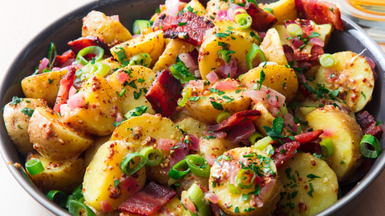

Potato Salad

Granny's Hot Potato Salad
It's the absolute best potato salad you'll ever eat. Savory, tangy, and fresh—it's perfect for cookouts, parties, and even eating it all by yourself (I won't tell if you won't). My granny used to make enough of this salad to fill a washtub and there was never a scrap left over after a party. It is excellent as a side with fried chicken, pulled pork, or ham.
Give it a try!
Ingredients
- 3 lbs fingerling and/or baby red potatoes
- 1/4 cup apple cider vinegar
- Olive oil
- 2-3 cloves of garlic, grated
- 1 chopped onion (Vidalia's are recommended, but you can use any kind you want)
- 1/2 lb bacon
- Marzetti's Slaw Dressing
- 1/4 tsp ground ginger
- 2 tbsp sugar or honey
- salt and pepper
- 5-6 stalks chopped green onions
- 2-3 chopped hard-boiled eggs
Directions
- If possible, soak the potatoes overnight (12 hours) in water and apple cider vinegar.
- Pour off the water, rinse, add water to cover potatoes and cook on medium heat until fork tender (NOT mushy!).
- Cut into bite-sized pieces and toss with olive oil (drizzle just enough so they don't get sticky), onion, and garlic.
- Gently mix, cover and let it "hang out and get happy" while you fry the bacon.
- Fry the bacon until it is crisp and crumble it up. Reserve 2 tbsp-ish of bacon grease for later.
- Add 3/4 jar of Marzetti's Slaw Dressing, ground ginger, and honey (or sugar), and salt and pepper to taste.
- Stir and let it get bubbly and then turn off the heat.
- Add bacon, chopped eggs, and green onions to the potatoes, then pour the hot dressing over the potato mixture and gently mix around again.
- Enjoy! You can keep the potato salad warm in a crockpot, if you want. It is also excellent re-heated and keeps well.